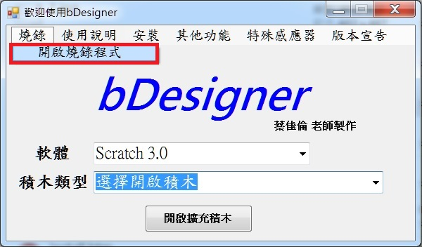
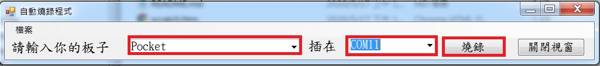
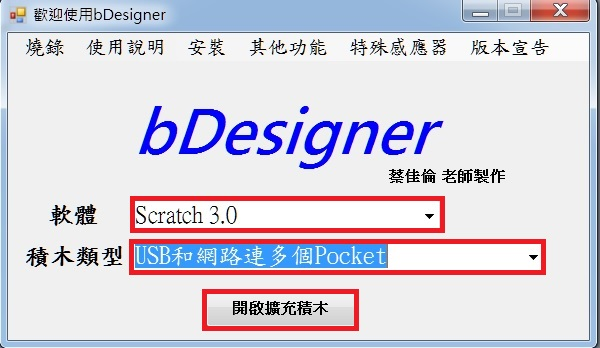
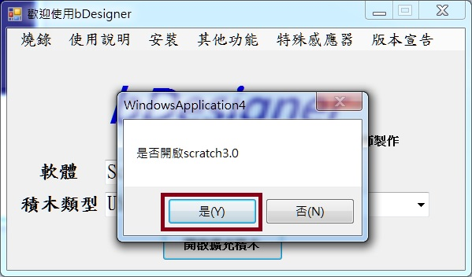
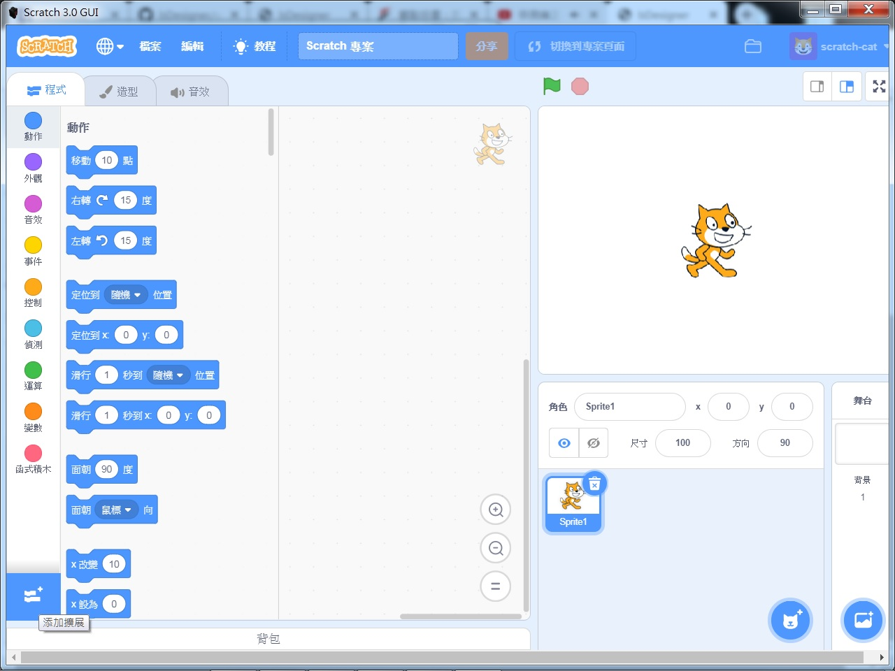
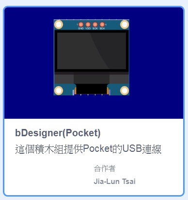
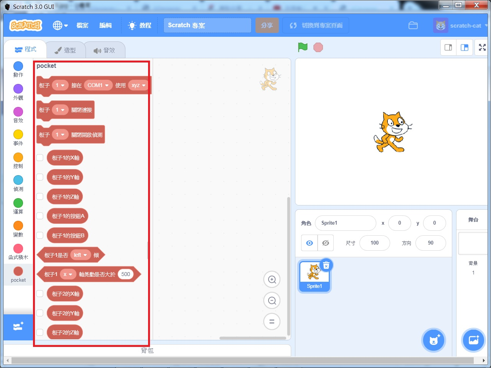
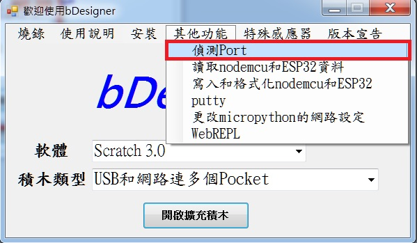
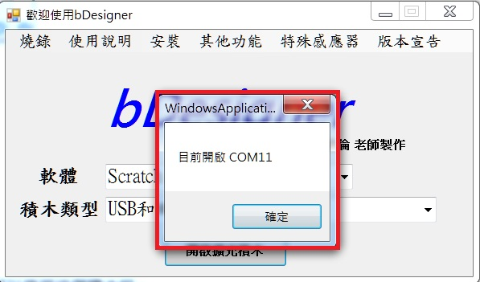
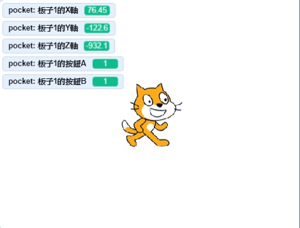

For Scratch3
PocketCard 的Scratch3 使用蔡佳倫老師的bDesigner。bDesigner是桃園八德國小蔡佳倫老師所撰寫，這套軟體融合了各種不同的積木軟體，免費提供給中小學老師們使用，目前也免費提供給PocketCard 的使用者。
https://crouse12.github.io/bDesigner/index.htm
bDesigner的Scratch 3.0使用要先燒錄韌體，因此，先插上Pocket，接著點選主選單上的燒錄之開啟燒錄程式

出現燒錄程式之後，選擇"Pocket"，並選擇Pocket的COM Port。

燒錄後，回到主選單，選擇Scratch3.0，再選擇USB和網路連多個Pocket。

點選後，會出現一個詢問視窗，如果還沒有開啟scratch3.0，就點YES，如果已經開啟，請點NO。

點選YES之後，會出現一個DOS視窗與Scratch3.0，移動滑鼠到左下角，點選擴充積木。

尋找USB連Pocket的積木組。

點完後，會出現一組新的積木組，便可以使用這個積木組。

回到主選單，點選"其他功能"->"偵測Port"

這時會出現Pocket的COM Port。

回到Scratch3.0，拉一個COM Port積木，填上剛才查詢到的COM Port，點選COM Port積木。
將板子1的X軸、板子1的Y軸等積木的前方打勾。
這時，你就會看到有數字開始跑，這時就可以開始寫遊戲跟控制Pocket。
